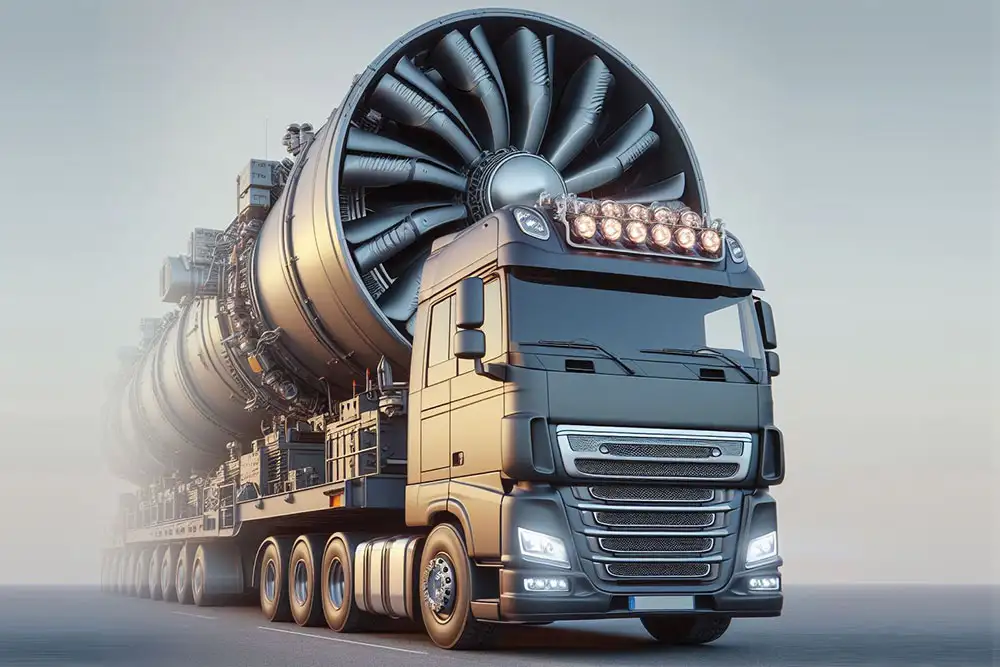

Conheça nossos serviços:
Seja bem-vindo ao site Viazul LTDA, somos uma empresa transportadora tanto industrial como de valores. Temos vários tipos de serviços focados em envio e entrega, também nossos profissonais são orientado a manter sigilo das entregas. Nossa gestão responsável por planejar, implementar e controlar o fluxo de bens, serviços e informações de uma empresa ou organização. Isso vai desde o ponto de origem até o ponto de consumo para atender às necessidades do cliente de forma eficiente e eficaz.
Pronta entrega e envio:
A frota da nossa transportadora é composta por veículos modernos e eficientes, projetados para garantir a segurança e a agilidade nas entregas. Com caminhões de diferentes tamanhos, atendemos às diversas necessidades dos nossos clientes, desde pequenas remessas até grandes cargas. Todos os veículos passam por manutenções rigorosas e são equipados com tecnologia de rastreamento, permitindo que os clientes acompanhem seus pedidos em tempo real. Nosso compromisso é oferecer um serviço de transporte confiável, contribuindo para o sucesso das operações dos nossos parceiros.
Escolta especializada:
Toda a equipe envolvida no serviço de escolta armada – desde controladores de sistema até agentes de segurança que vão a campo realizar a escolta – é altamente qualificada e mantem-se atualizada por meio de programas de treinamento e desenvolvimento.
Caminhões para grandes cargas:
Transportamos, equipamentos industriais ou da construção civil, motores marítimos, guindastes, vagões, transformadores, cenários e palcos, veículos, aeronaves e embarcações
Logística ferroviária:

Trabalhamos com cargas pesadas (minérios, produtos agrícolas, siderúrgicos, alimentares) e pessoas a médias e longas distâncias.
Nossos próprios contêineres:
Nossa transportadora utiliza contêineres de forma eficiente para o transporte de cargas, tanto em nível nacional quanto internacional.